Yanagawa
Yanagawa · Fukuoka
Yanagawa
Highlighted on the Fukuoka map.
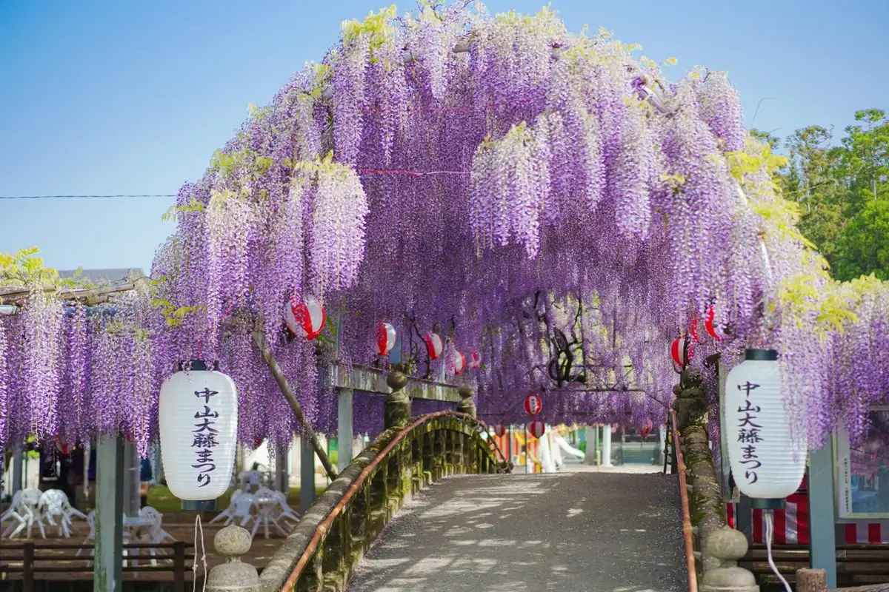
Sights
Nakayama Oto Festival
Yanagawa Hanshu Tachibana Tei O Hana
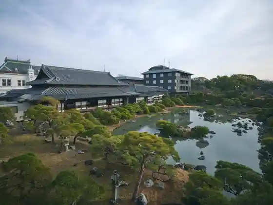
Unagi no Seiro Mushi
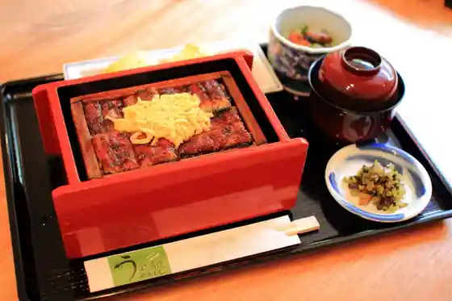
Shuki Taisai O Shin Kai
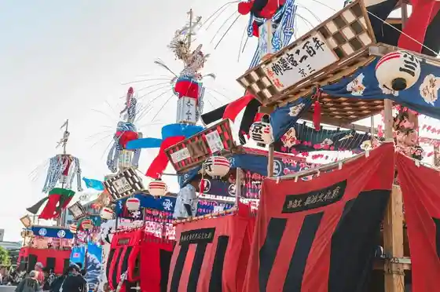
Yanagawa Kawakudari
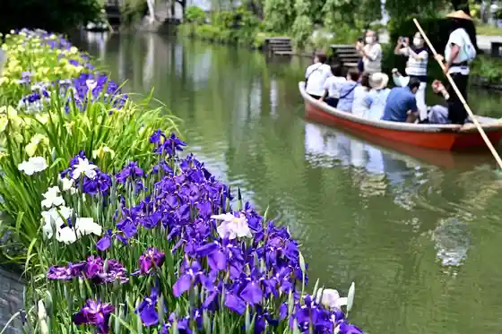
Suigo Yanagawa Kanko
Ariakekai no Higata
Kiyoshi Yanagi Shoku San
Yanagawa Joshi
Sagemon
Ganso Motoyoshi Ya Main Shop
Yanagawa Mutsugoro Land
Yanagawa Kamaboko Tokoro Sekiya
Shoto Sono
Fuku Gen Tera
Kitaharahakushu Seika Memorial Museum
Yanagawa Kankokaihatsu
Anri Farm
Dining
居酒屋 楽園 柳川
Izakaya Rakuen Yanagawa
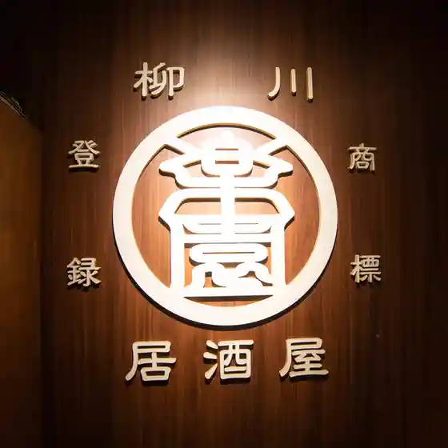
にの家 柳川店
Nino Ie Yanagawa Mise
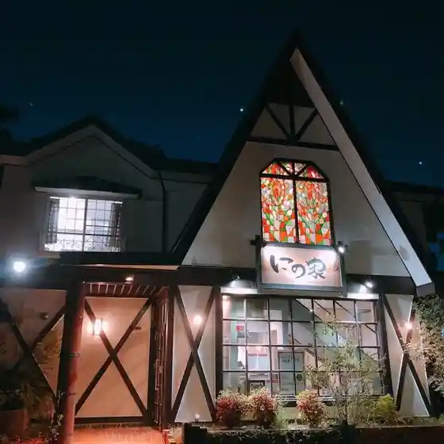
炭火 月兎
Sumibi Gatsu Usagi
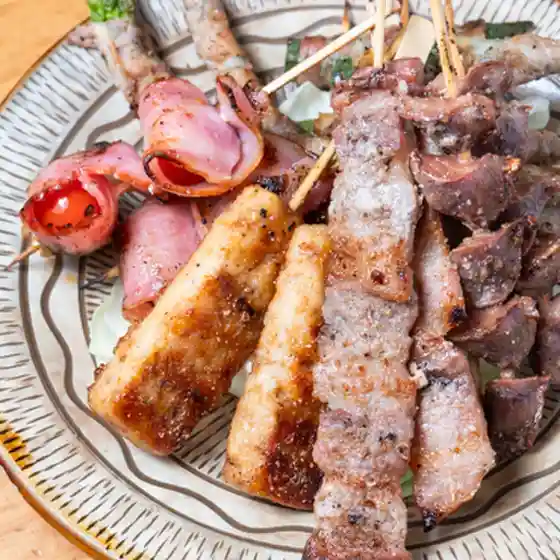
はなの舞 柳川駅東口店
Hanano Mai Yanagawa Eki Higashiguchiten
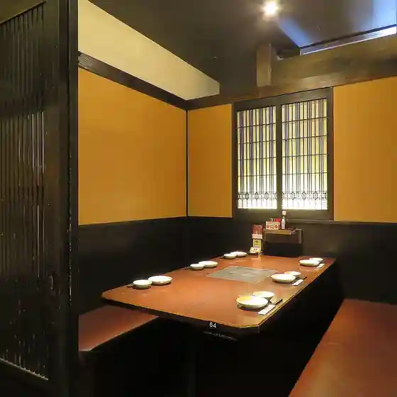
焼肉恩匠 柳川店
Yakiniku On Takumi Yanagawa Mise
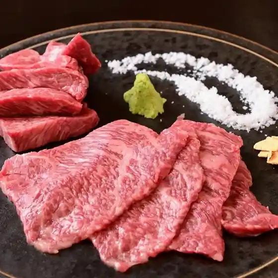
炭火焼肉 山頂
Sumibi Yakiniku Sanchou
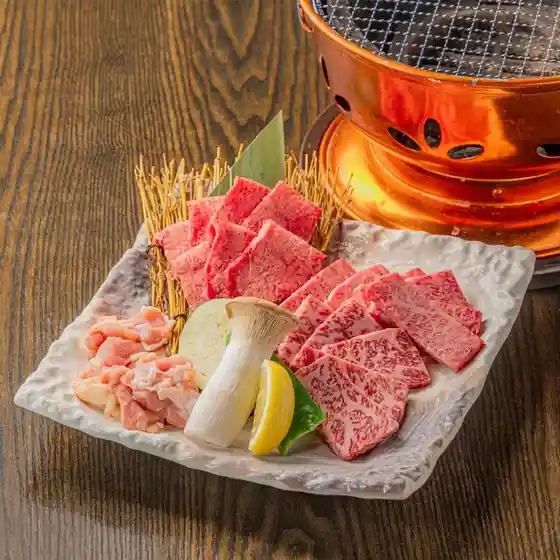
兎月
Usagi Gatsu
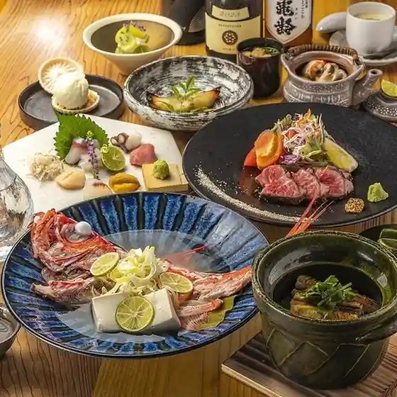
SHIVA SHAKTI
Shiva Shakti
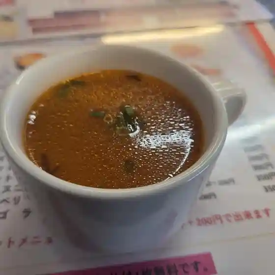
焼肉龍王館 柳川店
Yakiniku Ryuuou Kan Yanagawa Mise
福泉操
Fukusen Misao
焼肉笑家 柳川店
Yakiniku Warai Ie Yanagawa Mise
居酒屋 しんせい
Izakaya Shinsei
とりや 大和
Toriya Yamato
タナカハン
Tanakahan
日の出屋
Hinode Ya
天祐丸
Tenyuu Maru
肉娘 あんころ
Niku Musume Ankoro
藤屋食堂
Fujiya Shokudou
昭和飯店
Shouwa Hanten
回転焼 柳 cafe＆dining
Kaitenyaki Yanagi Cafe & Dining
ブル ハウス
Buru Hausu
ポム ポム カフェ
Pomu Pomu Kafe
沖端庵
Oki Haji Iori
かるど。
Karudo .
居酒屋 マンマみつこ
Izakaya Manma Mitsuko
ムトー商店
Mutoo Shouten
豚骨ラーメン 一田
Tonkotsu Raamen Ichi Ta
焼肉 美腹
Yakiniku Bi Hara
大福寿司
Daifuku Sushi
かわいち
Kawaichi
あうんカフェ
Aun Kafe
Caffè Panda
Caff E Panda
リンガーハット 福岡柳川店
Ringaahatto Fukuoka Yanagawa Mise
大津屋
Ootsu Ya
吉志乃
Kichi Shino
深夜食堂
Shinya Shokudou
大福会館
Daifuku Kaikan
坂田屋
Sakata Ya
末広寿し
Suehiro Hisashi Shi
モグモグ
Mogumogu
久留米ラーメン清陽軒 ゆめモール柳川店
Kurume Raamen Kiyoshi You Ken Yume Mooru Yanagawa Mise
セブンイレブン 柳川高校前店
Sebun'Irebun Yanagawa Koukou Mae Mise
リバーフロー
Ribaafuroo
とまとハウス
Tomato Hausu
島田酒店
Shimada Saketen
古賀天ぷら屋
Koga Tenpura Ya
焼とりつつみ
Yaki Toritsutsumi
酒蔵の宴
Shuzou No Utage
創作料理 旬月
Sousaku Ryouri Jungetsu
かねこ屋
Kaneko Ya
京町洋風食堂 テロン
Kyoumachi Youfuu Shokudou Teron
一輪
Ichirin
びっくり焼き亭
Bikkuri Yaki Tei
やながわバル 京町総本店
Yanagawa Baru Kyoumachi Souhonten
白柳荘
Shiroyanagi Sou
松ちゃん
Matsu Chan
SUZU
Suzu
八蔵 ゆめモール柳川店
Hachizou Yume Mooru Yanagawa Mise
ローソン 柳川上宮永店
Rooson Yanagawa Jouguu Ei Mise
居酒屋 絆
Izakaya Kizuna
Wakamatsuya Yanagawa Fukuoka Prefecture Kyushu
Wakamatsuya Yanagawa Fukuoka Prefecture Kyushu
Wakamatsuya Yanagawa Fukuoka Prefecture Kyushu
Wakamatsuya Yanagawa Fukuoka Prefecture Kyushu
Wakamatsuya Yanagawa Fukuoka Prefecture Kyushu
Wakamatsuya Yanagawa Fukuoka Prefecture Kyushu
Wakamatsuya Yanagawa Fukuoka Prefecture Kyushu
Wakamatsuya Yanagawa Fukuoka Prefecture Kyushu
Ganso Motoyoshiya Yanagawa Fukuoka Prefecture Kyushu
Ganso Motoyoshiya Yanagawa Fukuoka Prefecture Kyushu
Ganso Motoyoshiya Yanagawa Fukuoka Prefecture Kyushu
Ganso Motoyoshiya Yanagawa Fukuoka Prefecture Kyushu
Ganso Motoyoshiya Yanagawa Fukuoka Prefecture Kyushu
Ganso Motoyoshiya Yanagawa Fukuoka Prefecture Kyushu
Ganso Motoyoshiya Yanagawa Fukuoka Prefecture Kyushu
Ganso Motoyoshiya Yanagawa Fukuoka Prefecture Kyushu
Yoakejaya Yanagawa Fukuoka Prefecture Kyushu
Yoakejaya Yanagawa Fukuoka Prefecture Kyushu
Yoakejaya Yanagawa Fukuoka Prefecture Kyushu
Yoakejaya Yanagawa Fukuoka Prefecture Kyushu
Yoakejaya Yanagawa Fukuoka Prefecture Kyushu
Yoakejaya Yanagawa Fukuoka Prefecture Kyushu
Yoakejaya Yanagawa Fukuoka Prefecture Kyushu
Yoakejaya Yanagawa Fukuoka Prefecture Kyushu
Ohana Yanagawa Fukuoka Prefecture Kyushu
Ohana Yanagawa Fukuoka Prefecture Kyushu
Ohana Yanagawa Fukuoka Prefecture Kyushu
Ohana Yanagawa Fukuoka Prefecture Kyushu
Ohana Yanagawa Fukuoka Prefecture Kyushu
Ohana Yanagawa Fukuoka Prefecture Kyushu
Ohana Yanagawa Fukuoka Prefecture Kyushu
Ohana Yanagawa Fukuoka Prefecture Kyushu
Tachibana Udon Yanagawa Fukuoka Prefecture Kyushu
Tachibana Udon Yanagawa Fukuoka Prefecture Kyushu
Tachibana Udon Yanagawa Fukuoka Prefecture Kyushu
Tachibana Udon Yanagawa Fukuoka Prefecture Kyushu
Tachibana Udon Yanagawa Fukuoka Prefecture Kyushu
Tachibana Udon Yanagawa Fukuoka Prefecture Kyushu
Tachibana Udon Yanagawa Fukuoka Prefecture Kyushu
Tachibana Udon Yanagawa Fukuoka Prefecture Kyushu
Koren Yanagawa Fukuoka Prefecture Kyushu
Koren Yanagawa Fukuoka Prefecture Kyushu
Koren Yanagawa Fukuoka Prefecture Kyushu
Koren Yanagawa Fukuoka Prefecture Kyushu
Koren Yanagawa Fukuoka Prefecture Kyushu
Koren Yanagawa Fukuoka Prefecture Kyushu
Koren Yanagawa Fukuoka Prefecture Kyushu
Koren Yanagawa Fukuoka Prefecture Kyushu
Yamadaya Yanagawa Fukuoka Prefecture Kyushu
Yamadaya Yanagawa Fukuoka Prefecture Kyushu
Yamadaya Yanagawa Fukuoka Prefecture Kyushu
Yamadaya Yanagawa Fukuoka Prefecture Kyushu
Yamadaya Yanagawa Fukuoka Prefecture Kyushu
Yamadaya Yanagawa Fukuoka Prefecture Kyushu
Yamadaya Yanagawa Fukuoka Prefecture Kyushu
Yamadaya Yanagawa Fukuoka Prefecture Kyushu
Wakamatsuya Yanagawa Fukuoka Prefecture Kyushu
Wakamatsuya Yanagawa Fukuoka Prefecture Kyushu
Wakamatsuya Yanagawa Fukuoka Prefecture Kyushu
Wakamatsuya Yanagawa Fukuoka Prefecture Kyushu
Ohana Yanagawa Fukuoka Prefecture Kyushu
Ohana Yanagawa Fukuoka Prefecture Kyushu
Ohana Yanagawa Fukuoka Prefecture Kyushu
Ohana Yanagawa Fukuoka Prefecture Kyushu
Yoakejaya Yanagawa Fukuoka Prefecture Kyushu
Yoakejaya Yanagawa Fukuoka Prefecture Kyushu
Yoakejaya Yanagawa Fukuoka Prefecture Kyushu
Yoakejaya Yanagawa Fukuoka Prefecture Kyushu
Folk Crafts Teahouse Rokki Yanagawa Fukuoka Prefecture Kyushu
Folk Crafts Teahouse Rokki Yanagawa Fukuoka Prefecture Kyushu
Folk Crafts Teahouse Rokki Yanagawa Fukuoka Prefecture Kyushu
Folk Crafts Teahouse Rokki Yanagawa Fukuoka Prefecture Kyushu
Saffron Yanagawa Fukuoka Prefecture Kyushu
Saffron Yanagawa Fukuoka Prefecture Kyushu
Saffron Yanagawa Fukuoka Prefecture Kyushu
Saffron Yanagawa Fukuoka Prefecture Kyushu
Saffron Yanagawa Fukuoka Prefecture Kyushu
Saffron Yanagawa Fukuoka Prefecture Kyushu
Saffron Yanagawa Fukuoka Prefecture Kyushu
Saffron Yanagawa Fukuoka Prefecture Kyushu
Stay
柳川の宿 ｈａｔａｇｏ
Yanagawa No Yado H A T A G O
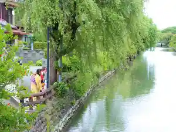
柳川 白柳荘
Yanagawa Shiroyanagi Sou
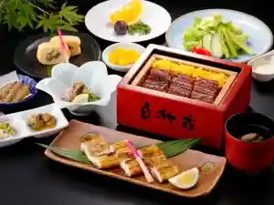
さいふや旅館
Saifuya Ryokan
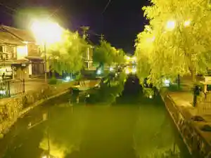
亀の井ホテル 柳川
Kame No I Hoteru Yanagawa
柳川藩主立花邸 御花
Yanagawa Hanshu Tachibana Tei O Hana
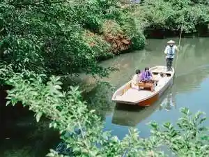
若力
Wakariki
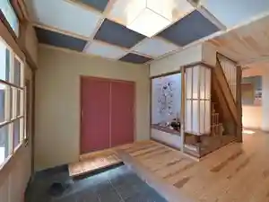
ホテルニューガイア柳川
Hoterunyuugaia Yanagawa
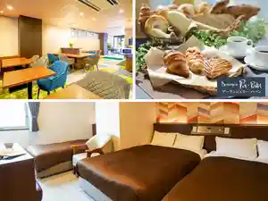
柳川温泉ホテル 輝泉荘
Yanagawa Onsen Hoteru Teru Izumi Sou
ホテルルートイン柳川駅前
Hoteruruutoin Yanagawa Ekimae
Ｋｙｕｓｈｕ Ｒｖ Ｒｅｓｏｒｔ ｉｎ ｙａｎａｇａｗａ
K Y U S H U R V R E S O R T I N Y A N A G A W A